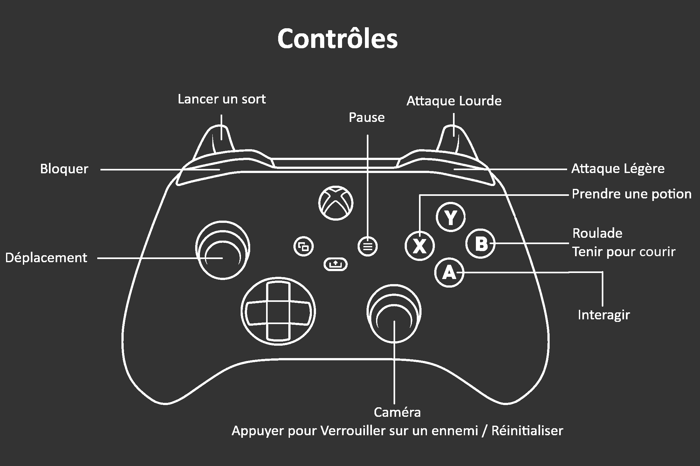

Neon Souls est un jeu de type Soulslike à la 3ème personne. Le jeu incorpore un style futuriste à la Vaporwave dans un environnement moderne. Afin de progresser dans le jeu, le joueur devra explorer plusieurs niveaux entrelacés et combattre divers types d’ennemis redoutables et sans pitié.
L’environnement sera également hostile envers le joueur, et il devra manœuvrer avec caution s’il souhaite éviter les pièges sur son chemin. Afin de surmonter tous ces défis, le joueur devra méticuleusement gérer les points d’expérience qu’il reçoit des ennemis vaincus pour augmenter ses points de vie, d’endurance, de magie, ou d’attaque. Le joueur pourra allouer ses points d’expérience aux cabinets d’arcade situés à divers endroits au travers des niveaux.
Si jamais le joueur devait être vaincu par les ennemis, il perdra tous ses points d’expérience qui n’auront pas été dépensés pour ses augmentations. Le joueur aura une chance d’acquérir ses points d’expérience perdus en retournant à l’endroit où il a été vaincu. D’ailleurs, les cabinets d’arcade servent de point de réapparition si jamais le joueur meurt au combat. Les cabinets peuvent également restaurer la vie, la magie et les potions du joueur, et les ennemis vaincus réapparaîtrons à ce moment.

De plus, le joueur est encouragé à explorer les niveaux afin de découvrir divers bonus d’amélioration, certains sont permanents alors que d’autres sont temporaires. Finalement, et afin de rendre le jeu accessible à tous, tous les contrôles peuvent être réassignés, la sensibilité de la caméra réajustée et divers filtres de daltonisme peuvent être appliqués afin de rendre l’expérience du jeu la plus agréable possible pour le joueur.
